2025第六届世界连珠青少年杯A+B组第一轮
踉踉跄跄的必胜
7月24日，世界五子棋青少年杯在爱沙尼亚智力运动平台正式落幕。我以九轮八胜一负的成绩获得A+B组冠军。反思九轮对局，实际上运气成分颇大。我的发挥马马虎虎，只能说总此九局，盘盘惊险，幸运夺魁。今天从第一轮开始，逐轮复盘。
第一轮
对手：艾高强（最终执白）
2024河南省第十五届线上高校联赛第23名（两打）
2025河南大学站河南省高校联赛第16名（两打）
2025洛阳市全民健身月比赛公开组第六名（两打）
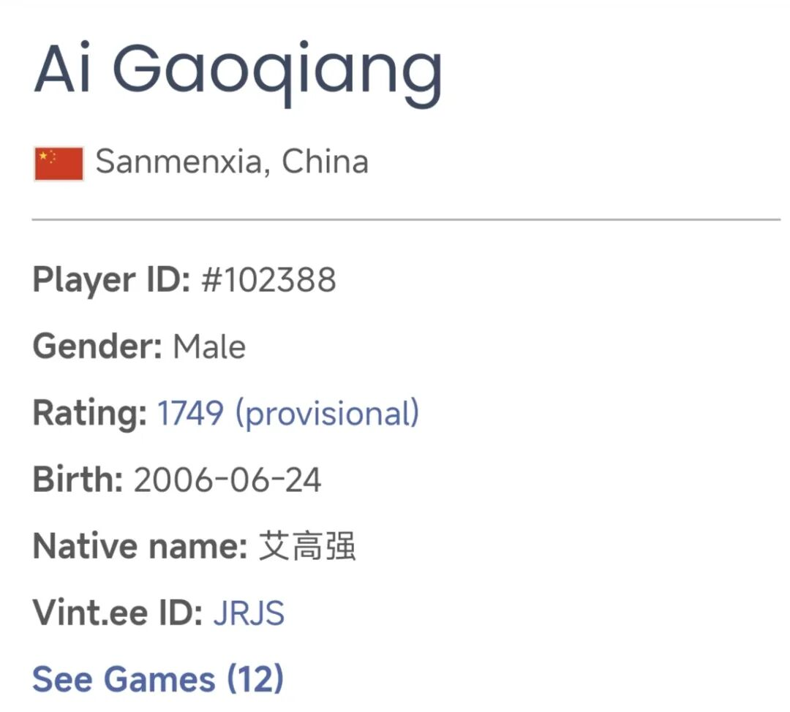
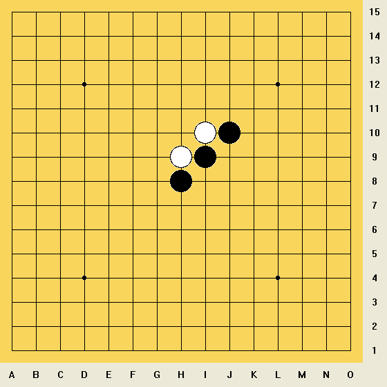
艾高强是一位很活跃的河南高校五子棋爱好者，其学校在郑州，赛前就经常交流并一同参与过比赛。没想到第一轮就遇到了他，一下可知他进步很快，有望成为河南高校五子棋的“后起之秀”。
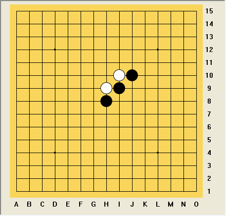
开局前五手结束后，艾给我一个显然黑必胜局面。情有可原，因为他此前接触两打更多，对塔拉山口-10规则不甚熟稔。我便开始思考必胜线路，希望速胜以保存体力。我清楚此局和花月定式有关，但浮光掠影，暴算是唯一正道。
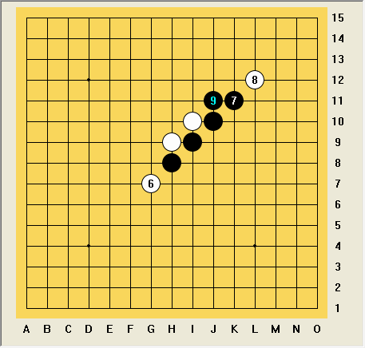
自然交换过来拿黑后，艾下止6正常防守。我黑7这里思考过能不能通成金星，但显然是不可取的。直接做二上挡二肯定不差，但当时的想法比较朴素，冲四定型后黑9团角挡二，进攻空间虽被压缩，但两个活二给足了对方压力。不是最佳但也是合理的进攻。
白10选择下止竖线活二，同时自造一个活二。按照常规花月一打的思路，黑11下一步下止白斜活二同时做两个大跳活二是好手，实际上也是效率很高的进攻方式，然而实战时放弃了这一走法，换向上止白斜活二的同时跳活三。也是可行的方法，只不过相较前一种思路来说，此类下方更具有命令性，对手无非选择堵活三的任意某端，选择比较固定，方便深入计算与提前演算。
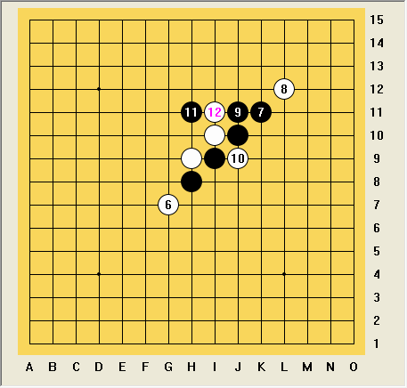
白12自然挡中间，黑13要做出选择了。这里存在多个进攻点，然而依局面来看显然没有抵达全部必胜的程度。稍有不慎，必胜就要失去。这里也能看出黑11的缺陷。容错率显然降低。快速验算能淘汰在k10团角的点，后续白容易实施滚包，压榨黑棋空间的同时使黑棋丧失棋形优势。其它点也都愚拙，唯二进入可选范围的便是i12做双连活二以及j13跳活二+跳眠三的组合。
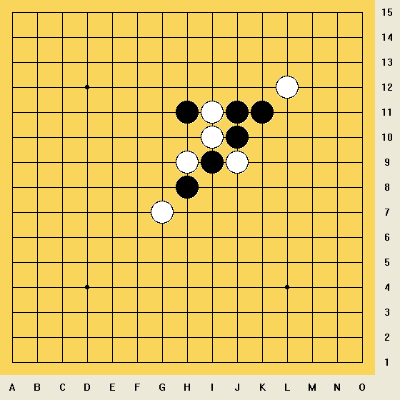
如果计算细致，可以发现i12做双活二更好，最强防的后续只需要做一步VC2，其余皆为T级别的进攻，取胜线路其实还算明了。然而分支很多，想要地毯出所有线路是不容易的。实战中并未严格推算，退而求其次探索了棋形的舒展程度，选择了j13的走法。这样下来，必胜就更漫长了。其实右侧是没有杀的，还需要换方向做棋。
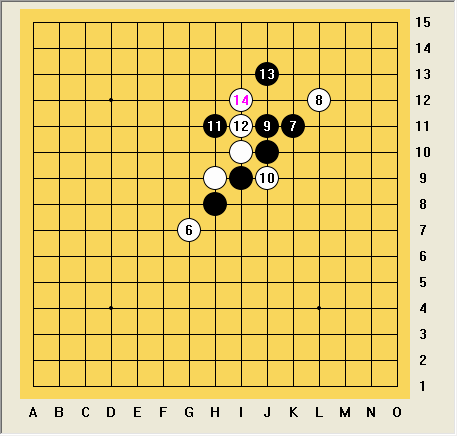
黑13选择走j13，白14无非走在i12防住跳活二的同时压缩跳眠三的施展余地。这是很明显的强防，我同时相信对手也会走在这里，因为无论从棋感还是精确计算上说，这个点都是必争之地，因而在艾的思考时间中，我便全身心的投入这条路线后续的进攻探索。
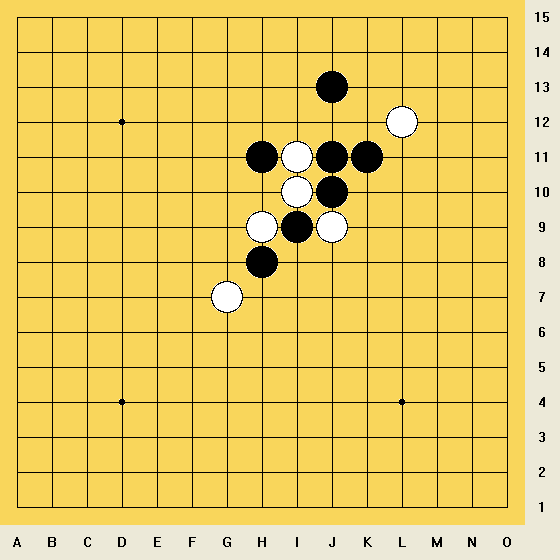
艾果然也选择了这个白14，可惜我发现右侧没杀，且有朦胧感，似乎业已多次见过这个棋形，且只能交换后另辟蹊径。经过充分推算，基本可以下结论，只要白全部防对，右侧没有直接杀。以上黑15至白24为实战交换过程。
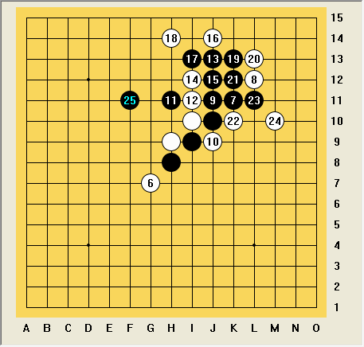
不得不佩服艾的防守能力，在如此高压的棋势下，防守滴水不漏。刚才的交换过程只要失误一步，便会一命呜呼。那么黑25该如何做棋呢？首先先看局面，白棋的先手等级只有VC2，唯一的活二受黑棋眠三冲四限制无法使用。看来黑棋下一步只要做出合乎逻辑的VCT就可以维持必胜的进攻，不一定需要做V。盘面上一个非常好的做T点，就是g11——埋伏后续j8-j8-l10-l11最终取胜的VCT，同时兼顾上下棋形特点，可以让白棋顾此失彼。如果防上，那么下方很快就可以杀穿；如果防下，则上方的厚度足够取胜，也是白棋不能接受的。这是一个好点。
还有一个点是直接在j8处做双活二的同时做V。这个点好不好呢？实际上这种VCT看似高超，其实短考后就可发觉白想防下是容易的。因为现在黑棋在上方厚度不够，棋势多集中在下方，那么自然可以考虑在下方防御。计算后可以发现白棋有i7的妙防，上方黑棋材料不够，下方黑棋空间不够，足够阻击完全黑棋的进攻。
可惜实战时一昧求稳，这两个做T点仅仅想到就被摒弃了。当时想到确实可以尝试做T，但白棋的选择过多，一旦出现妙防，甚至会丢先，陷入万劫不复之地。所以退而求其次地选择做V。做V也是有好点的，比如f11，做了个两步杀，意图继续在左侧创造材料维持进攻。但是效率大打折扣。当时验算后发现白棋上方不存在反攻倒算的防御，黑棋的眠三几乎总能阻挡白棋的进一步动作，所以也就拍上去了这个f11。基本上无论白棋怎么防，下一步我都再拍g11眠三积累材料，估计不会差。
至于黑25直接冲四定型后再考虑进攻路线等手段，则未深究。留四不冲保留变化的棋理所言非虚，况且我局面优势很大，没有必要强攻，容易出险。但实际上，我刚才那步f11倘若对手动用最强防，我接下来的思路可能就要葬送胜势了。如果白26选择防g13做斜线活二，我黑27仍然按计划走g11，那么白28走e11跳活三，我黑29堵跳活三中间的同时反跳活三，白30再反回来，我的空间和线路都不够杀了。这个必胜可就真玩脱了。这也是复盘时才发现的危险情况。实战时只粗略感觉能反回来维持进攻，丝毫未察觉这样搞就要无杀了。
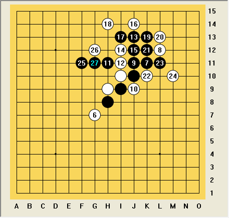
好在艾这里走了个次强防，白26=g12，防住V的同时阻击了斜线的发展线路。我黑27按计划走g11，埋伏一个两步T，准备看白28走哪里决定继续往哪侧发展。黑29很可能准备抢F10这种感觉上的好点，但已疲惫，不希望暴算，只等待对方防。
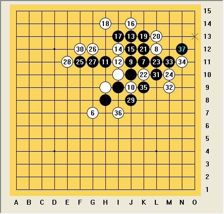
艾的白28=E11??倘若这时没有T，这种走法或许是合理的，控线控盘，是为不错的下法。可惜右下角我有T，直接引线，黑33四三杀，黑37五连胜。
局后与艾交流，艾认为自己从开局就已经死亡，后续垂死挣扎，到白28时希望尽快结束对局保存体力应对后续局数，避免内战元气两败俱伤。实际上他终盘前的防守基本上无隙可乘。关于开局，他也想到，“按理来讲塔拉山口-10应该更公平......我应该在第5手的时候交换让你下第5手....你会挑一个你认为最平衡的点还可以下，因为我不知道平衡打点.....我忘记前五步都可以提出交换了......”，虽然不熟悉塔拉山口-10规则，但这盘算得上是块敲门砖，他也理解了塔拉山口-10规则该如何进入一个尚且满意的开局对局。确实是学习能力很强。
本局我没有重大的失误，但黑25的选择不太妥当。此外布局阶段还有许多选择上的瑕疵，总体上还算说得过去，第一盘比赛从生疏到热场，也达成了目的。
艾后续轮次中击败了爱沙尼亚选手Sören Kask，安茨老师的学生，最终位列比赛第22位。
------
第一轮
时间：2025年7月19日 14:00
假先方：潘冠臣①4（最终执黑）
假后方：艾高强2③⑤（最终执白）
最终：潘冠臣 执黑胜
------
第二轮我会对阵谁呢？敬请期待下一篇棋评。